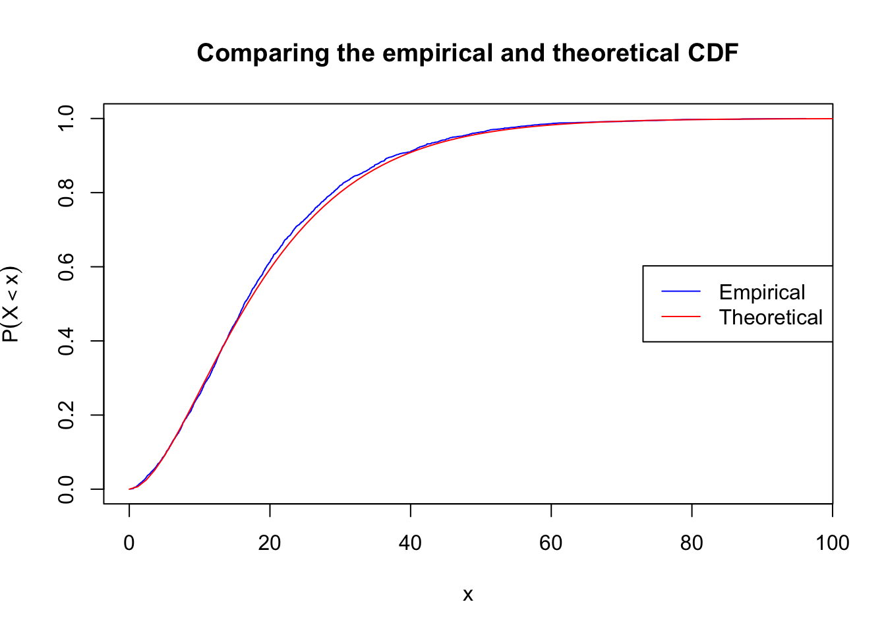
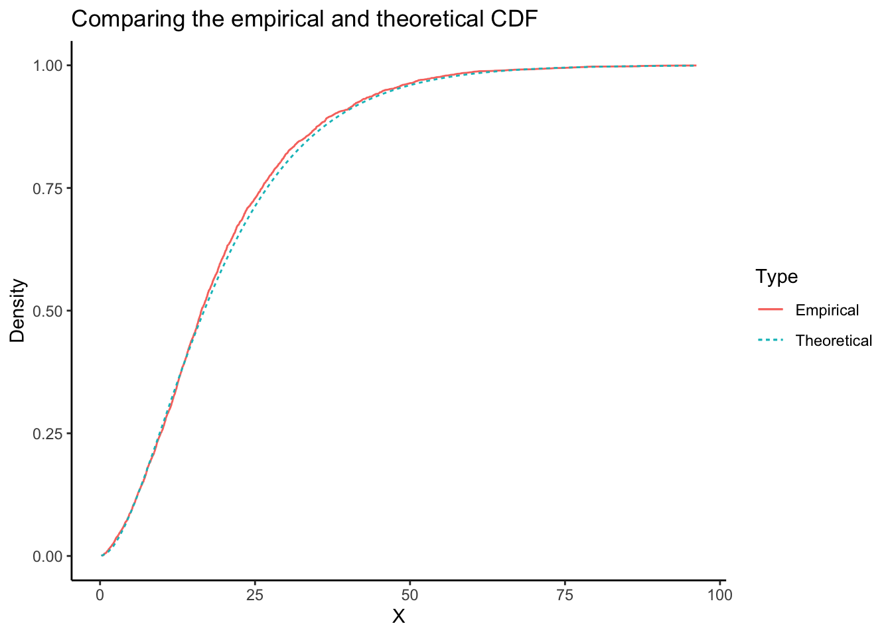

1 - pbeta(0.8, 73 + 1, 27 + 1)[1] 0.03848785Assigned: Friday, August 25th, 2023
Due: Friday, September 1st, 2023
Suppose we are going to sample 100 individuals from a county (with population size much larger than 100) and ask each sampled person whether they support policy Z or not. Let \(Y_i = 1\) if person \(i\) in the sample supports the policy, and \(Y_i = 0\) otherwise.
Solution: First, we write down the distribution of a single observation, \(Y_i\):
\[ P(Y_i = 1\vert \theta) = \theta \quad \mathrm{and} \quad P(Y_i = 0|\theta) = (1 - \theta). \]
We can write these two cases together as follows
\[ Pr(Y_i = y_i) = \theta^{y_i}(1 - \theta)^{1 - y_i}. \]
We recognize this as the Bernoulli distribution. The joint distribution is obtained by multiplying together all the observations
\[ Pr(Y_1 = y_1, \dots, Y_{100} = y_{100}) = \prod_{i=1}^{100}\theta^{y_i}(1 - \theta)^{1 - y_i} = \theta^{\sum_i y_i}(1 - \theta)^{100 - \sum_i y_i}. \]
This is the distribution of any specific sequence of \(y_i\)’s. Let \(X = \sum_{i=1}^{100}y_i\). There are \(\binom{100}{X} = \frac{100!}{X!(100-X)!}\) ways to choose a group of size \(X\) from a group of size \(100\). Then we can write the distribution of \(X\) as
\[ Pr(X = x) = \binom{100}{x} \theta^x(1 - \theta)^{100 - x} \]
Solution: The equation above now becomes
\[ Pr(X = 73|\theta) = \binom{100}{73} \theta^{73}(1 - \theta)^{27} \]
When evaluating this expression, we do our calculations on the log scale to avoid numerical underflow. This gives us
\[ Pr(X = 73|\theta) = \binom{100}{73} e^{73 \ln(\theta) + 27 \ln(1 - \theta)}. \]
We could easily calculate the binomial coefficient on the log scale, but I trust that our programming language of choice has an efficient and safe implementation.
```{r}
#| layout: [[2, 4]]
# Include your code here
my_likelihood <- function(theta) {
choose(100, 73) * exp(73 * log(theta) + 27 * log(1 - theta))
}
thetas <- seq(0, 1, by = 0.1)
result <- my_likelihood(thetas)
data.frame(theta = thetas, likelihood = result)
plot(
thetas,
result,
xlab = expression(theta),
ylab = expression(Pr(X==73*"|"*theta))
)
``` theta likelihood
1 0.0 0.000000e+00
2 0.1 1.114936e-50
3 0.2 4.378461e-30
4 0.3 8.515317e-19
5 0.4 1.750513e-11
6 0.5 1.512525e-06
7 0.6 2.204769e-03
8 0.7 7.196692e-02
9 0.8 2.168109e-02
10 0.9 8.758007e-07
11 1.0 0.000000e+00Solution: First we write out all the equations that we know, before piecing them together:
\[ \begin{aligned} p(\theta \vert X = 73) &= \frac{Pr(X=73|\theta)\pi(\theta)}{m(X=73)} \\ Pr(X=73|\theta) &= \binom{100}{73} \theta^{73}(1 - \theta)^{27} \\ \pi(\theta) &= \frac{1}{11} \\ m(X=73) &= \sum_\theta\binom{100}{73} \theta^{73}(1 - \theta)^{27} \cdot \frac{1}{11}. \end{aligned} \]
This gives us
\[ \begin{aligned} p(\theta \vert X = 73) &= \frac{\binom{100}{73} \theta^{73}(1 - \theta)^{27} \cdot \frac{1}{11} }{\sum_\theta\binom{100}{73} \theta^{73}(1 - \theta)^{27} \cdot \frac{1}{11}} \\ &= \frac{\theta^{73}(1-\theta)^{27}}{\sum_\theta \theta^{73}(1-\theta)^{27}} \end{aligned} \]
Once again doing our calculations on the log scale, we get
\[ p(\theta \vert X = 73) = \frac{e^{73\ln(\theta) + 27\ln(1 - \theta)}}{\sum_\theta e^{73\ln(\theta) + 27\ln(1 - \theta)}} \]
```{r}
#| layout: [[2, 4]]
# Include your code here
my_posterior <- function(theta) {
theta_seq <- seq(0, 1, by = 0.1)
C <- sum(exp(73 * log(theta_seq) + 27 * log(1 - theta_seq)))
exp(73 * log(theta) + 27 * log(1 - theta)) / C
}
thetas <- seq(0, 1, by = 0.1)
posterior <- my_posterior(thetas)
data.frame(theta = thetas, posterior = posterior)
plot(
thetas,
posterior,
xlab = expression(theta),
ylab = expression(p(theta*"|"*Y))
)
``` theta posterior
1 0.0 0.000000e+00
2 0.1 1.163146e-49
3 0.2 4.567788e-29
4 0.3 8.883524e-18
5 0.4 1.826206e-10
6 0.5 1.577927e-05
7 0.6 2.300105e-02
8 0.7 7.507881e-01
9 0.8 2.261859e-01
10 0.9 9.136709e-06
11 1.0 0.000000e+00
Solution: This time, our posterior is seen to be
\[ \begin{aligned} p(\theta \vert X = 73) &= \frac{\binom{100}{73} \theta^{73}(1 - \theta)^{27} \cdot 1 }{\int_0^1\binom{100}{73} \theta^{73}(1 - \theta)^{27} \cdot 1 d\theta} \\ &= \frac{\theta^{73}(1-\theta)^{27}}{\int_0^1 \theta^{73}(1-\theta)^{27}d\theta} \\ &= C \cdot \theta^{73}(1-\theta)^{27} \end{aligned} \]
We can use the fact that the equation above should integrate to one to find out what \(C\) is.
\[ \int_0^1 C\cdot \theta^{73}(1 - \theta)^{27} = 1 \\ \int_0^1 \theta^{73}(1 - \theta)^{27} = \frac1C. \]
From working with the Beta distribution, we know that
\[ \int_0^1\frac{\Gamma(\alpha + \beta)}{\Gamma(\alpha)\Gamma(\beta)}x^{\alpha-1}(1 - x)^{\beta-1} = 1. \]
Using this, we see that
\[ C = \frac{\Gamma(73 + 27 + 2)}{\Gamma(73 + 1)\Gamma(27 + 1)}, \]
giving us
\[ p(\theta \vert X = 73) = \frac{\Gamma(73 + 27 + 2)}{\Gamma(73 + 1)\Gamma(27 + 1)} \theta^{73}(1 - \theta)^{27}. \]
This means that after observing the data, our uncertainty about \(\theta\) is described by the Beta distribution with \(\alpha = 73+1\) and \(\beta = 27+1\).
\[ \theta\vert Y \sim \mathrm{Beta}(73 + 1, 27 + 1) \]
We’ll use R’s built in dbeta (d for density) function to evaluate this.
```{r}
#| layout: [[2, 4]]
# Include your code here
thetas <- seq(0, 1, by = 0.1)
posterior <- dbeta(thetas, 73 + 1, 27 + 1)
data.frame(theta = thetas, posterior = posterior)
plot(
thetas,
posterior,
xlab = expression(theta),
ylab = expression(p(theta*"|"*Y))
)
``` theta posterior
1 0.0 0.000000e+00
2 0.1 1.126085e-48
3 0.2 4.422245e-28
4 0.3 8.600470e-17
5 0.4 1.768018e-09
6 0.5 1.527650e-04
7 0.6 2.226817e-01
8 0.7 7.268659e+00
9 0.8 2.189790e+00
10 0.9 8.845588e-05
11 1.0 0.000000e+001 - pbeta(0.8, 73 + 1, 27 + 1)[1] 0.03848785Solution: The density in c. belongs to a discrete variable and the density in d. belongs to a continuous variable. This means the two functions have different meanings. Discrete random variables have densities (often called mass functions) that can be interpreted as probabilities, but that is not the case for continuous random variables. Thus the density of a continuous random variable can be greater than one as long as it integrates to one over it’s domain.
The goal of this exercise is to generate random numbers, plot the histogram, the empirical pdf and cdf for these numbers, and see how they compare to the theoretical pdf and cdf. The goal is also to compare the sample mean and standard deviation to the theoretical mean and standard deviation.
Solution:
```{r}
# Include your code here
B <- 3000
alpha <- 2
beta <- 0.1
X <- rgamma(n = B, shape = alpha, rate = beta)
theoretical_mean <- alpha / beta
theoretical_sd <- sqrt(alpha / beta^2)
obs_mean <- mean(X)
obs_sd <- sd(X)
data.frame(
theoretical_mean,
obs_mean,
theoretical_sd,
obs_sd
)
``` theoretical_mean obs_mean theoretical_sd obs_sd
1 20 19.53301 14.14214 13.66634Solution:
Using base R:
```{r}
# Include your code here
x_dens <- density(X, from = 0)
plot(
x_dens,
main = "Comparing the empirical and theoretical densities",
col = "blue"
)
curve(
dgamma(x, shape = alpha, rate = beta),
from = 0, to = 120,
add = TRUE,
col = "red"
)
legend(
"top",
c("Empirical", "Theoretical"),
col = c("blue", "red"),
lty = 1
)
```Using the tidyverse:
```{r}
#| output: false
library(dplyr)
library(ggplot2)
theme_set(theme_classic())
``````{r}
tibble(
X = X
) |>
ggplot(aes(X)) +
geom_density(
bounds = c(0, Inf),
aes(color = "Empirical", lty = "Empirical")
) +
stat_function(
fun = function(x) dgamma(x, shape =alpha, rate = beta),
geom = "line",
aes(color = "Theoretical", lty = "Theoretical")
) +
labs(
color = "Type",
linetype = "Type",
x = "X",
y = "Density",
title = "Comparing the empirical and theoretical densities"
)
```
Solution:
Using base R:
```{r}
# Include your code here
X_sorted <- sort(X)
quantile <- seq_along(X_sorted) / (length(X_sorted) + 1)
plot(
X_sorted, quantile,
type = "l",
col = "blue",
main = "Comparing the empirical and theoretical CDF",
xlab = "x",
ylab = expression(P(X<x))
)
curve(
pgamma(x, shape = alpha, rate = beta),
from = 0, to = 120,
add = TRUE,
col = "red"
)
legend(
"right",
c("Empirical", "Theoretical"),
col = c("blue", "red"),
lty = 1
)
```
Using the tidyverse:
```{r}
library(dplyr)
library(ggplot2)
tibble(
X = X
) |>
arrange(X) |>
mutate(
empirical = row_number() / (n() + 1)
) |>
ggplot(aes(X)) +
geom_line(
aes(y = empirical, color = "Empirical", lty = "Empirical")
) +
stat_function(
fun = function(x) pgamma(x, shape =alpha, rate = beta),
geom = "line",
aes(color = "Theoretical", lty = "Theoretical")
) +
labs(
color = "Type",
linetype = "Type",
x = "X",
y = "Density",
title = "Comparing the empirical and theoretical CDF"
)
```